数据挖掘是关于发现数据中隐藏的模式和关联。如果数据量很小，只能由人在合理的时间内完成的大量分析，可以由计算机在很短的时间内完成。在 Excel 2016 之前，可以安装一个加载项(称为数据挖掘)，该加载项打包了不同的方法和模型，可以使用这些方法和模型，主要作为黑盒，以获得洞察力并发现任何数据集中的信息。微软随后改变了政策，开始将这种能力迁移到云上，首先是 Office 365，最近是 Azure。也可以在 Excel 中计算很多东西，内置函数，甚至借助 Visual Basic 应用 ( VBA )中编程的宏。这里，我们将展示两个案例，数据挖掘可以帮助我们找到隐藏在数据中的重要信息。
在本章中，我们将讨论以下主题:
市场购物篮分析研究顾客经常一起购买哪一对产品/服务。客户群分析分析哪些客户在一段时间后仍在购买产品/服务，哪些客户流失。
为了完成这一部分，读者需要从位于https://GitHub . com/packt publishing/Hands-On-Machine-Learning-with-Microsoft-Excel-2019/tree/master/chapter 06的 GitHub 库下载transactions_by_dept.csv和cohort_input_data.csv文件。
我们都在几乎每一个网上商店里读到过这样一句话:买了这个产品的人也买了...。这一切都始于 20 世纪 90 年代的亚马逊，如今已广为流传。同样的原则甚至正在实体店进行测试，顾客可以根据他们的购物历史和与其他产品的相似性，获得关于购买哪些商品的个性化建议。这些技巧通常被称为交叉销售，它们非常有用，因为向现有客户销售额外的产品通常比获得新的产品更容易。
在本节中，我们将展示一个简化的购物篮分析示例，这是这些推荐系统背后的数据挖掘技术。结果可能不如用更高级的方法获得的结果准确，但仍然有助于解释该方法并教授如何升级该方法。
我们将使用从https://data.world/下载的商业交易列表。以通常的方式加载transactions_by_dept.csv文件。导航到数据|来自文本/CSV 并选择文件。
您需要在 Power Query 中编辑该表，以将第一列的数据类型更改为文本，因为它包含事务 ID，并且可能会被解释为数字并被 Excel 截断。
生成的表格如下所示:
在这个特殊的例子中，我们将只关注前两列。POS Txn 包含交易 ID，而Dept显示发生交易的部门的描述。我们的目标是找出同一顾客在一次交易中在不同部门购物的频率。
在我们的发现中，我们会看到明显的、无趣的组合；可以解释和利用的意外组合(例如，在一个相关部门购物时提供在一个部门销售的产品)，以及我们无法解释的组合(可能是偶然发生的，或者只是需要进一步调查)。
要开始我们的分析，我们需要做以下工作:
要执行这些任务，我们将按照以下步骤使用电源查询功能:
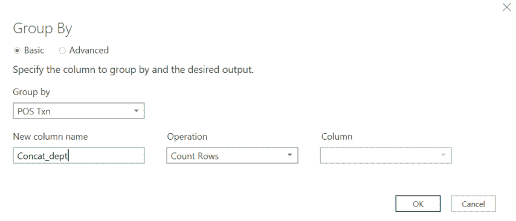
=表。Group(#"Changed Type "，{"POS Txn"}，{{"Concat_dept "，每个表。RowCount(_)，type number}})
前面的公式如下面的屏幕截图所示:
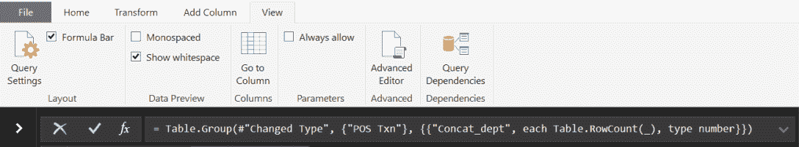
=表。Group(#"Changed Type "，{"POS Txn"}，{{"Concat_dept "，每个文本。Combine([Dept]，" | "，type text}})
不同的是，不是在表( Table)中计算行数。RowCount ，我们将它们连接起来，使用“|”作为分隔符(文本)。组合。我们还将输出类型改为文本。输出应该如下所示:
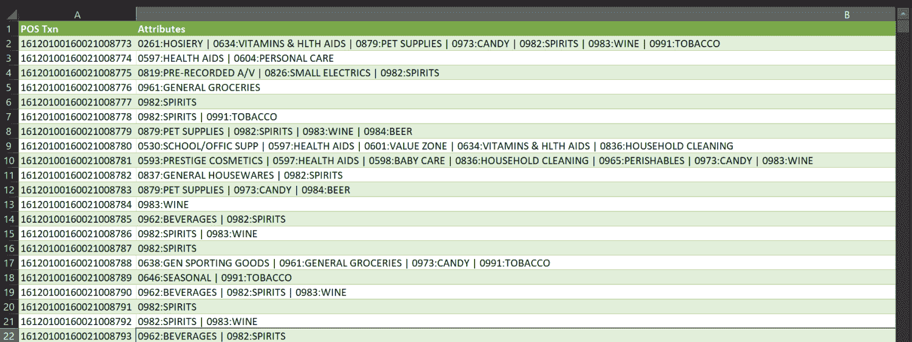
对于每个事务 ID，我们现在有一个字符串表示涉及的部门列表。我们将使用此表来计算部门的组合，但首先，我们将其转换为一个范围:
在现实生活的例子中，我们可能必须限制我们正在分析的时间段，以减少所需的计算量并清理数据，忽略不寻常的事务(异常值)。在我们的例子中，我们将限制所研究的组合的数量。我们可以两人一组，三人一组，甚至更多。问题是，组合的数量会随着部门的数量迅速增加。事实上，这个数字可以计算如下:
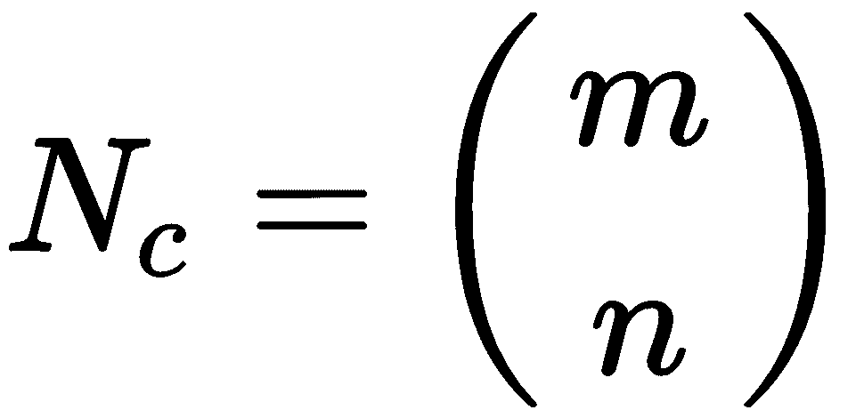
这里， m 是元素的总数， n 是每个组合中的元素数。这种计算考虑到了元素不能重复(一个部门和自己比没有意义)，顺序无关。
我们将根据交易数量选择前 10 个部门，并使用 Excel 函数计算组合。为此，请执行以下步骤:
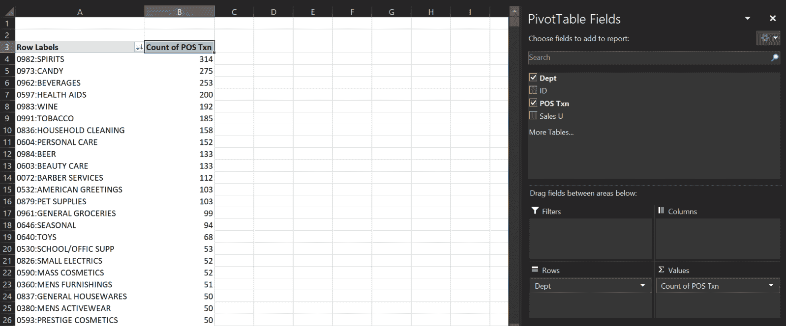
0982:SPIRITS
0973:CANDY
0962:BEVERAGES
0597:HEALTH AIDS
0983:WINE
0991:TOBACCO
0836:HOUSEHOLD CLEANING
0604:PERSONAL CARE
0603:BEAUTY CARE
0984:BEER
如何才能轻松构建两个部门所有可能的组合？如果我们正确定义单元格内容并使用 Excel 内置的复制功能，事情就简单了。
让我们假设这 10 个部门列在单元格 A1:A10 中。然后按照以下步骤操作:
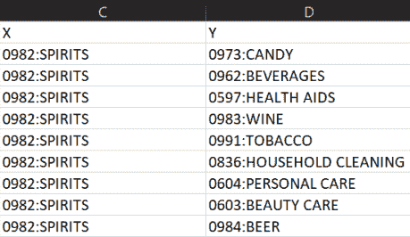
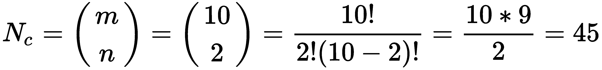
回到我们的Cancat depts表，我们需要计算每一对出现在同一事务中的事务数(X和Y)以及每个部门出现的次数。我们将定义两个函数:
X&Y = = COUNTIF(' Concat depts '！$ B $ 2:B $ 2065；" * "&C2&" * "&D2&" *)+COUNTIF(' Concat depts)！$ B $ 2:B $ 2065；“*”&D2&“*”&C2&“*”)
X = COUNTIF('Concat depts '！$ B $ 2:B $ 2065；“*”&C2&“*”)
支持= X & Y/N
置信度= X & Y/X
这里， N 是交易的总数。支持度代表规则(部门组合)在数据中出现的频率，置信度是对同时涉及X和Y部门的交易的条件概率的估计。将这两列相加，我们得到一个如下图所示的表格，显示了计算结果:
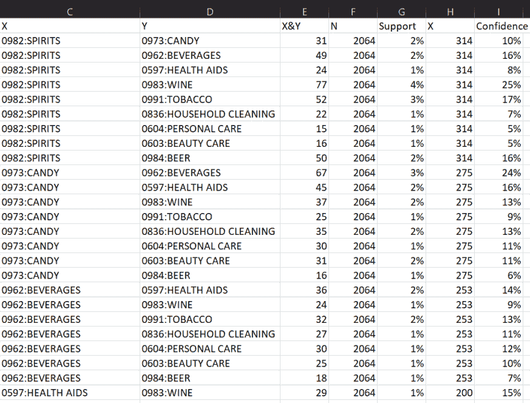
我们刚刚执行的计算是 Apriori 算法的基础，该算法由 R. Agrawal 和 R. Srikant 于 1994 年发表，用于在布尔关联规则的数据集中查找频繁项目集，这样命名是因为它使用了频繁项目集属性的先验知识。Apriori 算法在挖掘频繁项目集和相关的关联规则方面也很有用。通常，该算法用于对包含大量交易的数据库进行操作，例如客户在超市购买的商品。它有助于顾客轻松购物，并提高商店的销售业绩。重要的是要注意，项目之间的相关性并不意味着因果关系；例如，购买一件商品会导致某人购买另一件商品。
在现实世界的场景中，我们会选择具有最大支持度和置信度超过某个阈值的组合，并研究这些见解。除了显而易见的规则，比如人们在同一次购买中在烈酒和葡萄酒部门购物，我们会发现其他我们没有预料到的组合。要点是找到可操作的见解；也就是说，我们可以做些什么。我们可以提供新的文章，将它们组合在促销活动中，并在不同的地方做广告。
有大量的可能性。重要的是，机器已经学会了隐藏的关联，并给了我们关于自己业务的有用信息。极其重要的是，不仅机器学习专家参与这些分析，而且参与业务的人也应该给出他们的印象，并利用他们的经验和知识将这些信息转化为经济利益。
可以在 Excel 中进行全面的分析吗？如果我们没有更先进的工具，我们应该把自己限制在玩具模型上吗？当然不是！Excel 非常强大，能够用于高级分析，但我们需要知道如何用宏编写一点 VBA 代码。
市场购物篮分析的概念现在应该清楚了，我们可以前进到另一个客户行为分析的例子。
了解公司客户及其行为的一个很好的方法是进行细分分析。这些细分市场是具有相同特征的客户群，通常被称为群组。它们的定义在很大程度上取决于我们正在处理的业务类型。
我们将分析的数据集包含一系列客户 id、他们第一次从我们这里购买商品的日期、他们离开我们的日期以及每月平均花费的金额。“离开我们”在这个上下文中是什么意思？这主要是一个定义问题。例如，如果我们提到一张信用卡，我们可以认为客户在注销该卡时离开了，或者我们可能想进一步说，如果客户两三个月没有花钱，我们认为他们已经离开了。
我们的分组将基于开始日期。我们将研究在特定时期内有多少客户抛弃了我们。
客户 ( LTV )的终身价值通常是指该客户在与我们相处的整个期间所产生的毛利。这两种分析共同帮助我们决定我们必须留住哪些客户，以及在每月消费和忠诚度方面，哪些行动在获得更有价值的客户方面更有效。
该分析包括以下步骤:
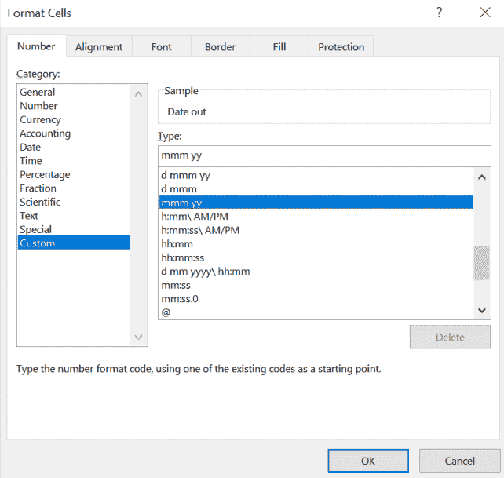
= DATEDIF(B2；C2；【m】
假设列 B 包含Data in值，列 C 包含Data out值。
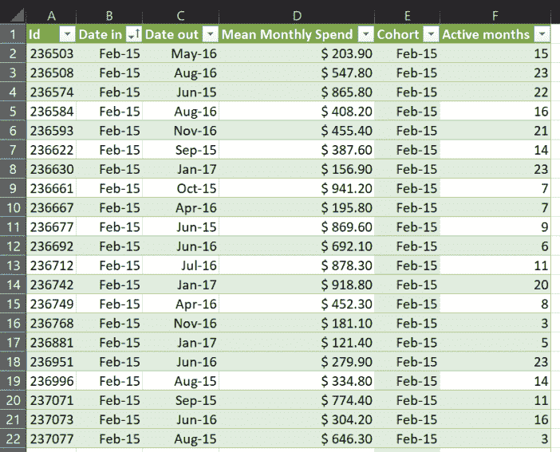
首先，我们将研究在特定人群的一生中，我们如何留住客户。每个小组将告诉我们，为了防止客户流失，应该重复哪些行为，应该避免哪些行为。我们将使用 COUNTIFS Excel 函数来计算每个群组中每月活跃客户的数量:
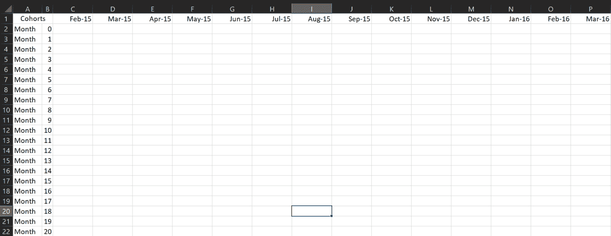
=COUNTIF('客户数据'！$ E $ 2:E $ 751；" =" & C$1)
这是因为Customer data表中的列 E 包含了队列列表，而第一行包含了我们矩阵中的队列列表。
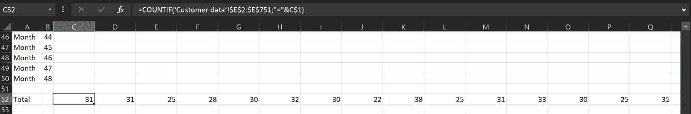
=COUNTIFS('客户数据'！$ E $ 2:E $ 751；" = "&C $ 1；客户数据！加元 2 美元:751 加元；>&EOMONTH(C $ 1；$B1))/C$52
我们来详细看看这意味着什么:
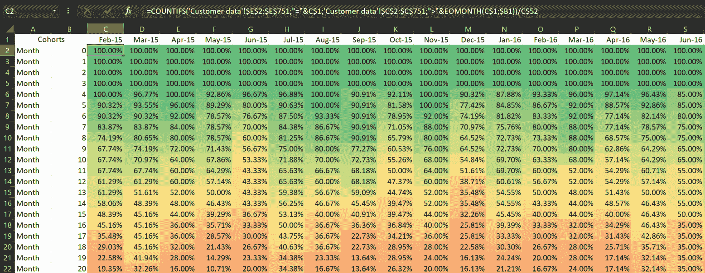
例如，我们可以看到，20 个月后，在Feb-15获得的客户中只有 19%还在。色标还显示，一些群组显示出比其他群组更快的流失。现在，业务专家有必要评估在每个时间段内采取了哪些行动，并重复或更改这些行动。
我们现在知道我们能够留住多少客户，但是他们的价值是什么？他们花的钱不一样，所以我们需要在分析中包括这个变量。请遵循以下步骤:
=SUMIFS('客户数据')！$ D $ 2:D $ 751；客户数据！$ E $ 2:E $ 751；" = "&C $ 1；客户数据！加元 2 美元:751 加元；>&EOMONTH(C $ 1；$B1))
这个公式意味着，如果满足两个条件，我们只对 D 列中的Customer data的值求和:
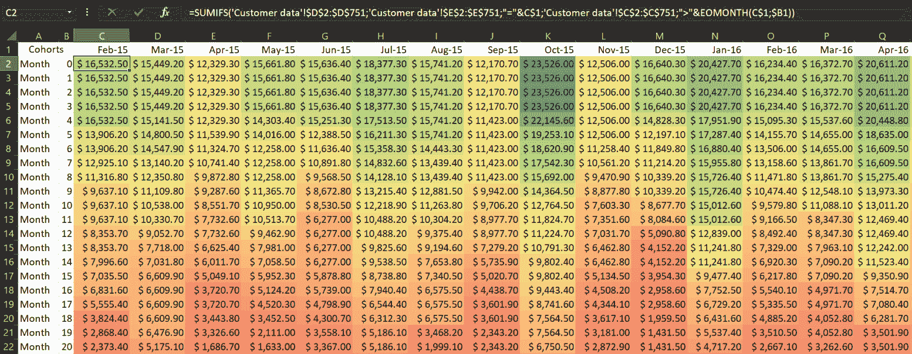
在这种情况下，我们可以看到每个群组的花费金额是如何随时间变化的，它与原始客户数量略有不同。
在本章中，我们学习了两种数据挖掘技术:购物篮分析和客户群组分析。第一个告诉我们基于顾客行为的商店部门或产品之间的隐藏关系。第二个显示了客户数量的时间演变，揭示了不同客户群之间的差异。
有大量的数据挖掘分析可以帮助我们挖掘数据集并找到隐藏的信息，这对我们了解我们的业务并做出正确的决策极其重要。
在下一章，我们将详细研究一种特殊的数据集:时间序列。我们将会看到它需要一种不同的建模和分析。